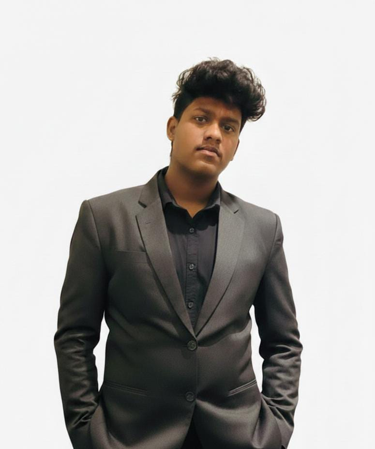

PROJECT 01INSTAGRAM REEL
VIDEO EDITOR • CAPCUT
JADUSHAN
BALU.
Creative visuals. Thoughtful edits. Stories that connect. I turn footage into engaging short-form content made for the scroll.
EXPLORE MY WORK ↓
01 / PORTFOLIO
Selected work
Five Instagram Reel projects
Tap a project to watch the edit.
PROJECT 02INSTAGRAM REEL
PROJECT 03INSTAGRAM REEL
PROJECT 04INSTAGRAM REEL
PROJECT 05INSTAGRAM REEL
02 / ABOUT
Editing with
intention.
I’m Jadushan Balu, a video editor focused on creating engaging visual content for digital platforms. I enjoy shaping footage into clear, energetic stories through pacing, transitions, music, and visual rhythm.
My goal is simple: make every second count and help each video communicate its message with impact.
03 / TOOLKIT
My editing
toolkit.
Primary editing software: CapCut.
Short-form videoInstagram ReelsVideo pacingTransitionsMusic syncVisual storytellingBasic colour adjustmentsSocial-first exports
04 / CONTACT
Have a project in mind?
Let’s create something worth watching.
Phone: 077 065 0984
WhatsApp: +94 71 459 8220
Email: jadushbalu11@gmail.com
Instagram: Jadushan Balu